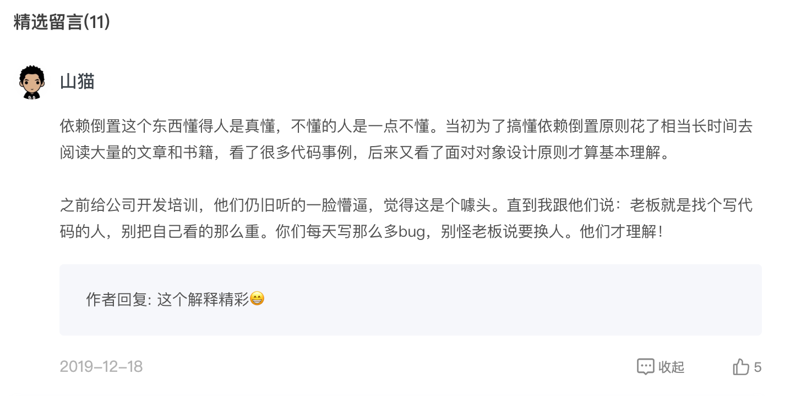
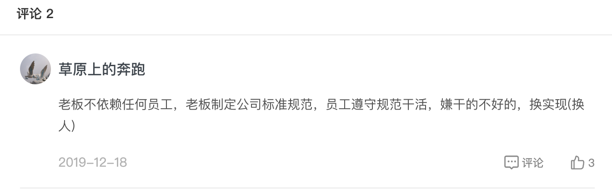
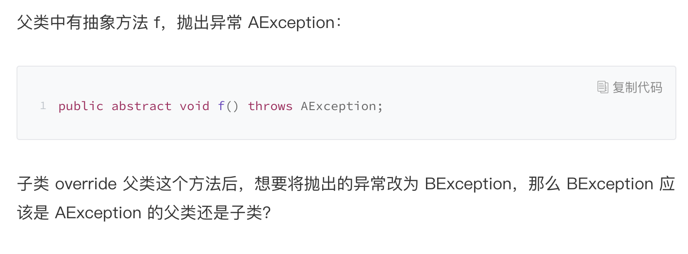

- 00 开篇词 掌握软件开发技术的第一性原理.md
- 01 程序运行原理：程序是如何运行又是如何崩溃的？.md
- 02 数据结构原理：Hash表的时间复杂度为什么是O(1)？.md
- 03 Java虚拟机原理：JVM为什么被称为机器（machine）？.md
- 04 网络编程原理：一个字符的互联网之旅.md
- 05 文件系统原理：如何用1分钟遍历一个100TB的文件？.md
- 06 数据库原理：为什么PrepareStatement性能更好更安全？.md
- 07 答疑 Java Web程序的运行时环境到底是怎样的？.md
- 07 编程语言原理：面向对象编程是编程的终极形态吗？.md
- 08 软件设计的方法论：软件为什么要建模？.md
- 09 软件设计实践：如何使用UML完成一个设计文档？.md
- 10 软件设计的目的：糟糕的程序员比优秀的程序员差在哪里？.md
- 11 软件设计的开闭原则：如何不修改代码却能实现需求变更？.md
- 12 软件设计的依赖倒置原则：如何不依赖代码却可以复用它的功能？.md
- 13 软件设计的里氏替换原则：正方形可以继承长方形吗？.md
- 14 软件设计的单一职责原则：为什么说一个类文件打开最好不要超过一屏？.md
- 15 软件设计的接口隔离原则：如何对类的调用者隐藏类的公有方法？.md
- 16 设计模式基础：不会灵活应用设计模式，你就没有掌握面向对象编程.md
- 17 设计模式应用：编程框架中的设计模式.md
- 18 反应式编程框架设计：如何使程序调用不阻塞等待，立即响应？.md
- 19 组件设计原则：组件的边界在哪里？.md
- 20 答疑 对于设计模式而言，场景到底有多重要？.md
- 20 领域驱动设计：35岁的程序员应该写什么样的代码？.md
- 21 分布式架构：如何应对高并发的用户请求.md
- 22 缓存架构：如何减少不必要的计算？.md
- 23 异步架构：如何避免互相依赖的系统间耦合？.md
- 24 负载均衡架构：如何用10行代码实现一个负载均衡服务？.md
- 25 数据存储架构：如何改善系统的数据存储能力？.md
- 26 搜索引擎架构：如何瞬间完成海量数据检索？.md
- 27 微服务架构：微服务究竟是灵丹还是毒药？.md
- 28 高性能架构：除了代码，你还可以在哪些地方优化性能？.md
- 29 高可用架构：我们为什么感觉不到淘宝应用升级时的停机？.md
- 30 安全性架构：为什么说用户密码泄漏是程序员的锅？.md
- 31 大数据架构：大数据技术架构的思想和原理是什么？.md
- 32 AI与物联网架构：从智能引擎到物联网平台.md
- 33 区块链技术架构：区块链到底能做什么？.md
- 33 答疑 互联网需要解决的技术问题是什么？.md
- 34 技术修炼之道：同样工作十几年，为什么有的人成为大厂架构师，有的人失业？.md
- 35 技术进阶之道：你和这个星球最顶级的程序员差几个等级？.md
- 36 技术落地之道：你真的知道自己要解决的问题是什么吗？.md
- 37 技术沟通之道：如何解决问题？.md
- 38 技术管理之道：你真的要转管理吗？.md
- 38 答疑 工作中的交往和沟通，都有哪些小技巧呢？.md
- 加餐 软件设计文档示例模板.md
- 结束语 期待未来的你，成为优秀的软件架构师.md
20 答疑 对于设计模式而言，场景到底有多重要？
今天是第二模块的最后一讲。在这一讲中，我们主要讲了软件的设计原理，今天，我将会针对这一模块中大家提出的普遍问题进行总结和答疑。并且，我在最后列了一个书单，这个书单里涉及到的书，可能会对你学习设计模式有一些帮助。让我们整理一下，再接着学习下一个模块的内容。
问题答疑
我们先来看一个同学提出的问题。
@山猫
如果项目初始就对Button按钮进行这么复杂的设计，那么这么项目后期的维护成本也是相当之高。
答：
我们这个模块是讲设计的，这些设计原则都是用来解决需求变更的问题的。如果你为需求变更而进行了设计，但是预期中的需求变更却从来没有发生过，那么你的设计就属于设计过度；如果已经发生了需求变更，但是你却没有用灵活的设计方法去应对，而是通过硬编码的方式在既有代码上打补丁，那么这就是设计不足。
因此，是否要使用各种设计原则和设计模式去设计一个非常灵活的程序，主要是看你的需求场景。如果你的场景就是需要灵活，就是要各种复用，应对各种变更，那么一开始就应该这样设计。如果你的场景根本不需要一个可复用的Button，那么就不需要这样设计。
所以关键还是看场景。
但是场景也会变化，一开始不需要复用，但是后来又需要复用了，那么就需要在复用的第一个场景去重构代码，而不是等将来困难局面hold不住了再重构。
同时，设计原则和设计模式只是让代码看起来复杂了，毕竟一个接口好几个实现，看起来不如if-else来得直接。但是如果习惯了这种灵活的设计，你会觉得这种设计并不复杂。对于软件开发而言，复杂的永远是业务逻辑，而不是设计模式。设计模式是可重复的，可重复的东西即使看起来复杂，熟悉了就会觉得很简单。
看起来复杂的设计模式就是用来解决维护困难这种问题的。因此正确使用设计模式，看起来复杂了，其实维护简单了，因为关系和边界更清晰了，你不需要在一堆强耦合的代码里搅来搅去。真正维护成本高的，其实是那些所谓的简单设计，牵一发动全身，稍不注意就是各种bug。
最终，一切都要看场景，只有合适的设计，不存在好的设计。分析场景，根据场景进行相应的设计。当然，你要先知道有哪些设计原则和设计模式可以用在这样的场景，这就是我们这个专栏模块的目的。
关于依赖倒置原则，评论区有一个精彩留言，分享给你。

留言回复则解释得更加直白：

另外，我在[第13篇]留了一道思考题：

很多人都回答正确了，但也有一些回答错误的。我这里说明一下。
正确答案为，BException是AException的子类。因为只有异常是子类，使用父类的地方catch异常的时候，才能catch到子类异常，也就是才满足里氏替换原则，能用子类替换父类。
最近几年，分布式架构、大数据、区块链、物联网、AI技术广泛流行。当我们说起软件开发的时候，提到的常常是这些宏大的技术架构。但是再宏大的技术也要落实到代码上，再厉害的技术终究要解决我们的业务问题。如果不能写出清晰、简单的代码，软件之间的耦合关系梳理不清楚，即使用了一些很炫酷的技术，软件开发可能还是会陷入混乱之中。
这些年，我也曾在一些知名的企业做过各种分布式系统、大数据平台开发，这些系统本身的架构也许有很大创新之处，但是真正使这些系统成功的，依然是低层那些干净、清晰的代码。这些年，我也见过一些知名的架构师、布道师，有些人也曾引领技术潮流，成为风口浪尖上的技术红人，但是真正能够一直走下去，走得远的，不是那些能给自己安了各种厉害头衔的人，而是那些能踏踏实实写出漂亮代码的人。
这个专栏的第二模块就是想传递这些信息，我们为什么要写好的代码，而不仅仅写能用的代码；以及什么叫好的代码，如何写出好的代码。
书籍推荐
人类编程的历史超过半个多世纪了，关于什么叫好的代码，如何写出好的代码也有很多研究，有许多的经典案例和著作。专栏中的内容主要都是来自这些经典的作品。
专栏[第9篇文章]，如何使用UML建模的内容主要来自《UML精粹》这本书。
其实UML本身非常简单，简单到我都觉得不值得专门阅读一本书去学习UML。UML真正需要学习的，是如何灵活使用UML去完成软件设计，如何用UML表述出自己的设计意图，以及在什么样的场景下用什么样的模型图去表述自己的设计意图。
马丁·福勒这本书也是偏重UML的实践应用，而不是讲UML语法本身如何。我的专栏文章内容则更多来自自己的一些最佳实践：如何用UML完成设计文档。应该说，我在十几年前，得以最早抓住机会跳出开发CRUD代码，去做一些大型系统的架构和框架开发工作，正是因为我用UML比较清晰地表述了系统当时的状况和设计目标，打动了项目的领导，放手让我一个资历尚浅的新人去做系统的架构设计，也因此而改变了自己的职业发展路径。我也期望UML能帮助你找到自己的职业跳跃之路。
专栏11~15篇文章，主要讲述软件设计的基本原则，这些内容主要来自《敏捷软件开发: 原则、模式与实践》。
作者罗伯特·C ·马丁，更知名的昵称是Bob大叔。这本书的名字叫《敏捷软件开发》，但是全书主要讲的是设计原则与设计模式。作者认为，我们能够进行敏捷开发，能够快速响应需求变更，不在于什么敏捷开发过程和敏捷项目管理，而在于敏捷的软件设计。如果代码一团糟，各种耦合，各种腐化，任你用什么项目管理手段都无济于事。
但如果你的代码灵活、强壮、易于维护和变更，可以轻松应对各种需求变更，那么敏捷的项目过程管理才能带来真正敏捷的效果。
应该说，我第一次读这本书的时候，它给我的震撼相当大。人们在软件开发中遇到困难，本能地想寻找一种轻松又强大的解决办法，什么管理方法啦，外部咨询啦，购买商业解决方案啦。但是，软件终究还是存在于工程师编写的一行行代码里，如果不把这些代码搞清楚，搞好，再好的外部支持只怕也帮不上什么忙。
[第19篇]内容也是来自罗伯特·C·马丁的一本比较新的书，叫《架构整洁之道》。
这本书算是Bob大叔架构思想的一本书，讲述关于架构的过往与现在，关于架构的各种思想原理。
第20篇的内容又是来自马丁·福勒的另一本经典著作《企业应用架构模式》。
这本书是讲述企业架构模式的集大成者，我们日常使用的各种开发技术，各种解决方案，都可以在这本书里找到来源。很多业界广泛使用的技术产品，Spring，MyBatis这些，只不过是这本书里很多架构模式的一种，而同类的模式还有很多，这些模式有的被淘汰，有的在进化。
看这本书里的各种架构模式，然后再想想这些模式背后的技术在这些年中的起起落落，感觉很是沧桑。
这就是第二模块中遗留的一些问题，无论是架构，还是软件开发，终归要落到人身上，落到人编写的一行行代码身上。我希望这个模块可以对你写代码有一些好的启发与提示。
© 2019 - 2023 Liangliang Lee. Powered by gin and hexo-theme-book.